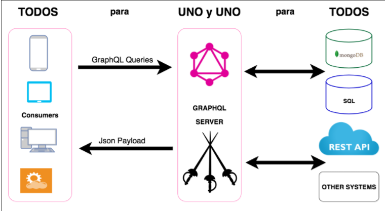
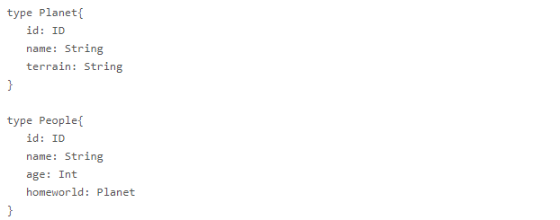
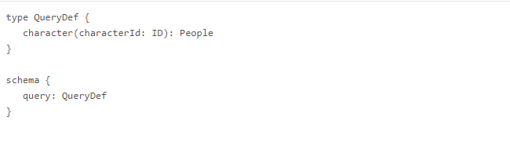
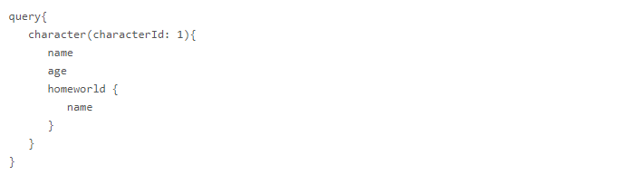
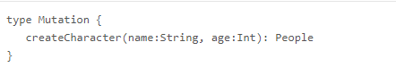

El nacimiento de GraphQL se da en Facebook en el año 2012, al inicio solo se utilizó de manera interna, fue recién en el año 2015 cuando Facebook lo hace público, es allí donde empieza su popularidad. Conozcamos a que nos referimos y en que nos puede ayudar esta nueva manera de trabajar las Querys.

¿Qué es GraphQL?
GraphQL, por así decirlo, es un lenguaje para ejecutar queries en un servidor API mediante el cual se provee al cliente de una descripción detallada de las estructuras de datos que ofrece.
Algunas de sus características y funcionalidades son:
- Existen múltiples librerías para implementar en distintos lenguajes (JavaScript, Go, Ruby, Python, Java …)
- Permite solicitar al servidor tan sólo la información que necesitamos de un recurso en una sola petición incluyendo los datos de otros recursos que se relacionen con el recurso raíz.
- Describe la estructura/organización de los datos ofrecidos por el API mediante un sistema de fuerte tipado en el que se detallan los recursos y las relaciones existentes entre estos.
- Permite la evolución de un API sin crear nuevas versiones
- Ofrece una única URI en la que se realizan todas las peticiones, por lo que no debemos preocuparnos de la semántica implementada por cada API.
- Es un lenguaje independiente de la fuente de datos. Los datos pueden obtenerse de un servicio web, una base de datos, un fichero, etc.
J. Manuel Garc Rozas de la web paradigmadigital utiliza la expresión “Todos para Uno y Uno para Todos”, esto debido a que con GraphQL existe un único punto de acceso a los datos. Aquí una imagen que puso J. Manuel Garc Rozas que lo explica claramente.
Como se puede apreciar, lo más importante entonces es GraphQL Server.
Todos son o serían aquellos que consuman, es decir, todos los consumidores que accedan a las operaciones o a las consultas y el uno sería el GraphQL Server
Uno sería el GraphQL Server y el todos serían aquellos subsistemas que estan por detras del GraphQL Server ya que como este actua como fachada o intermedio, todos pasan por él para resolver las consultas u operaciones.
Un vistazo rápido
El modelo de datos de un API se define en GraphQL mediante un Schema, que contendrá:
- Una serie de Types, que representan los objetos.
- Una serie de operaciones
- Queries.- Para obtener datos.
- Mutations.- Para realizar modificaciones en el servidor.
Entonces ahora la pregunta es, ¿Qué es Type?, pues es la representación de un objeto en donde definimos los fields o campos que lo componen. GraphQL nos ofrece tipos escalares o primitivos como Int, Float, String, Boolean, ID y Enum. Aquí una imagen de como definiríamos un Type.
Ahora veamos ¿Qué es un Query?, es un tipo especial dentro del esquema que brinda GraphQL, en ella definiremos campos que serán los puntos de entrada para cada una de las consultas que se deseen definir.
El ejemplo que vemos en la imagen se podrá ejecutar de la siguiente manera:
Obteniendo así el nombre y edad, además del nombre del planeta asignado.
Lo que hemos visto es justamente una de las ventajas que tiene GraphQL sobre la arquitectura REST, ya que en esta última recibiríamos un identificador o id o una URl y se debería formar una nueva petición a la API para obtener así dicha información
Finalmente ¿Qué son las Mutations?, asi como las antes mencionadas, son tipos especiales que nos permiten hacer operaciones tales como: actualizar, agregar y eliminar. Un ejemplo sería:
Suscripciones
Las suscripciones son otra característica de GraphQL. Con ellas, el cliente puede suscribirse a eventos que serán disparados siempre que el estado del servidor cambie. Las suscripciones son implementadas por distintos marcos de trabajo en diferentes maneras.
Validación
GraphQL verifica cada consulta o mutación contra el esquema. Esta es de gran utilidad, cuando los datos de entrada tienen una forma compleja. No tenemos que escribir código de validación molesto y frágil ya que GraphQL se encargará de eso por nosotros.
Aquí te dejamos el link al ejemplo de GraphQL para una interfaz de un servicio con Spring Boot y Java que realizó picodotdev en su blog:
Aquí otro ejemplo:
Aqui te dejo el link a su web oficial
Aqui te dejo el link al tutorial de su web oficial:
Además te dejamos el vídeo que hicimos explicando que es GraphQL de manera rápida.